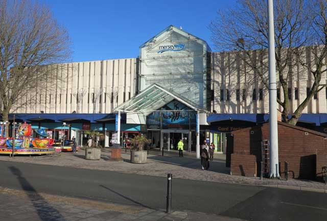
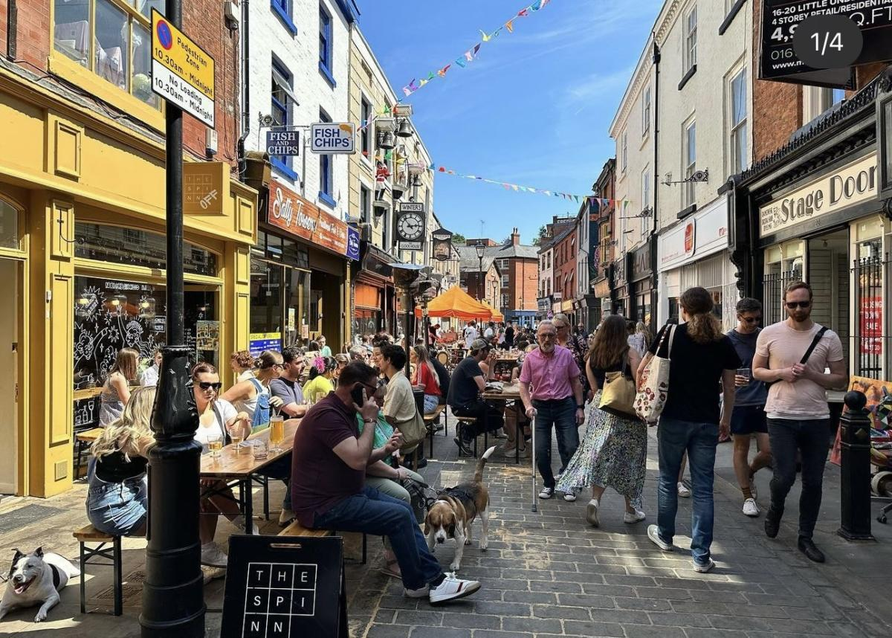
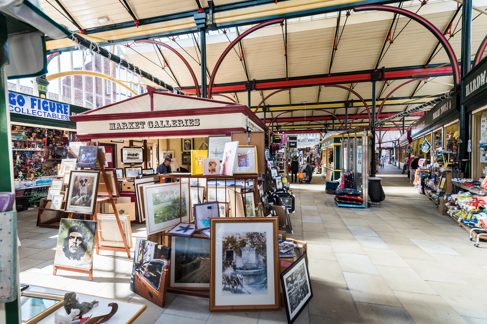
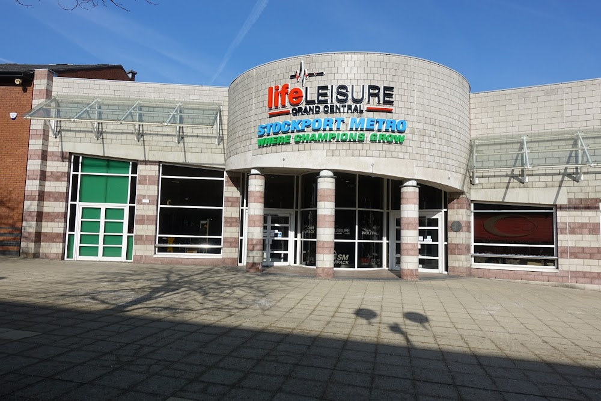
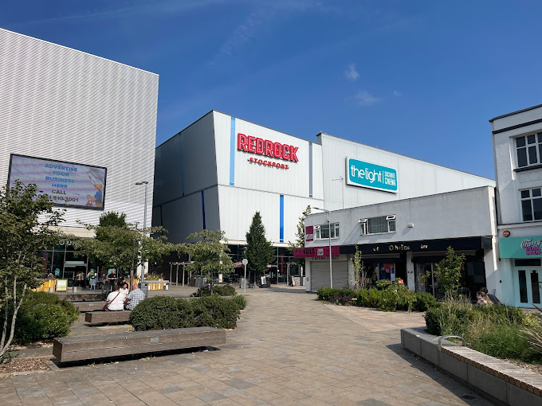
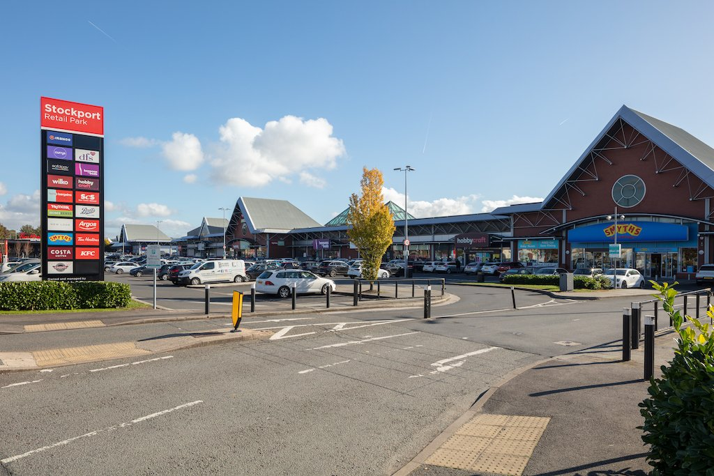

The Merseyway
Right in the middle of Stockport Town Centre is the Merseyway. Part indoor and part open-air shopping centre, containing every and any kind of establishment you could want.
If you're stuck for something to do and don't want to stray too far, the Merseyway is an excellent place for a wander. There's plenty to see and lots of windowshopping to do!
Find out more... The Underbanks
Running under and through the heart of the town centre, Stockport's cultural centre hosts a menagerie of pubs, bakeries, shops, and more.
The historic streets are an iconic part of Stockport and are a fantastic, easy city centre walk with lots to see and lots to do!
Find out more... Stockport Indoor Market
wooooww look at it
so cool uwu
Find out more... Life Leisure Grand Central
swimming
gym
Find out more... Redrock
light cinema
arcade, bowling, darts, karaoke
Find out more... Portwood
jeepers look at all those shops
you should try the cheesy bread loaf at the m&s foodhall bakery
Find out more... 